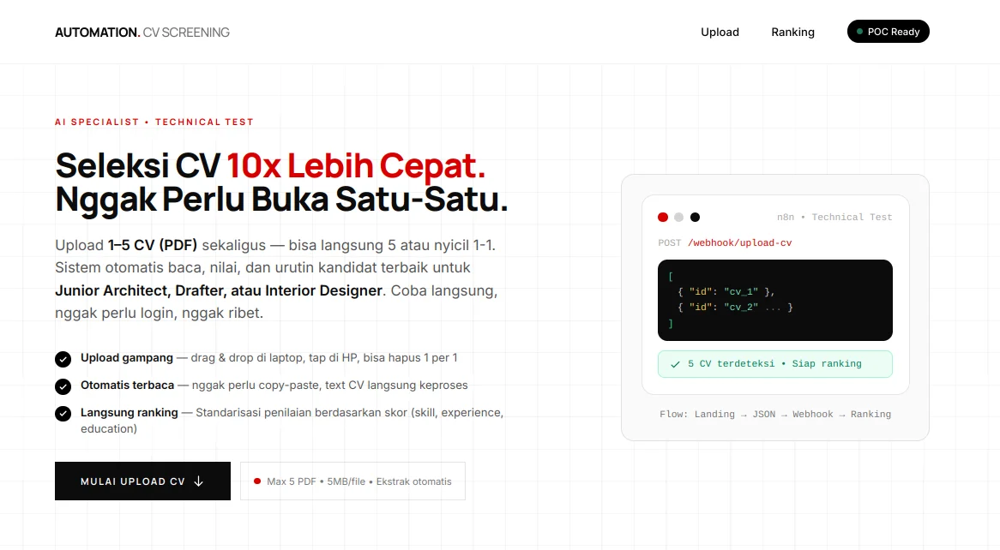
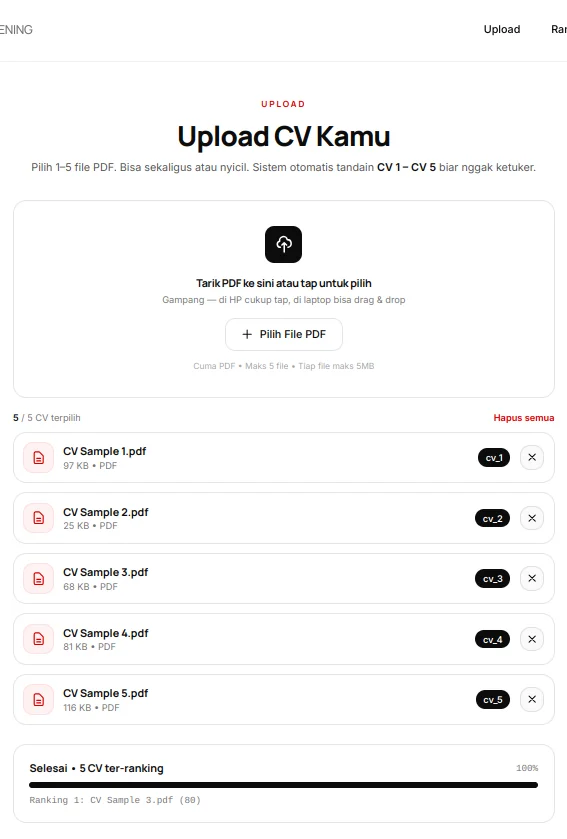
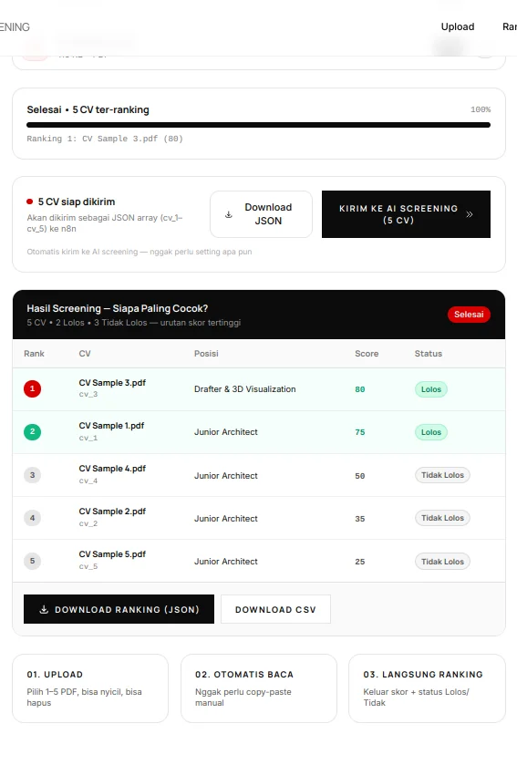
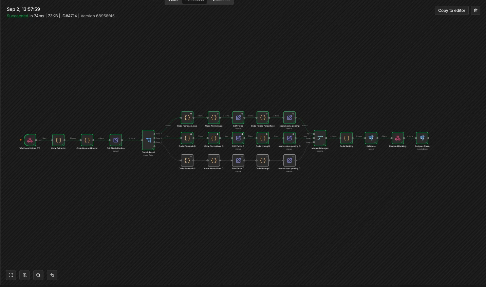
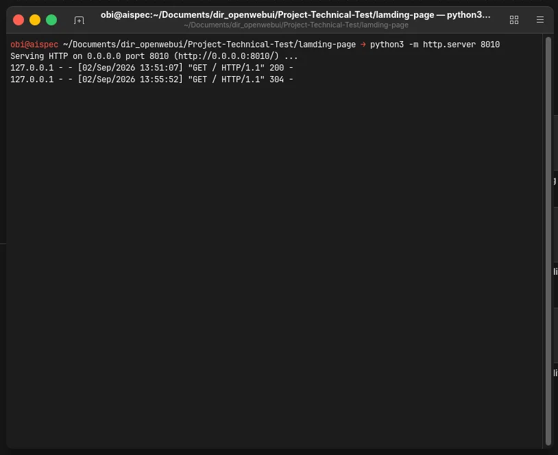
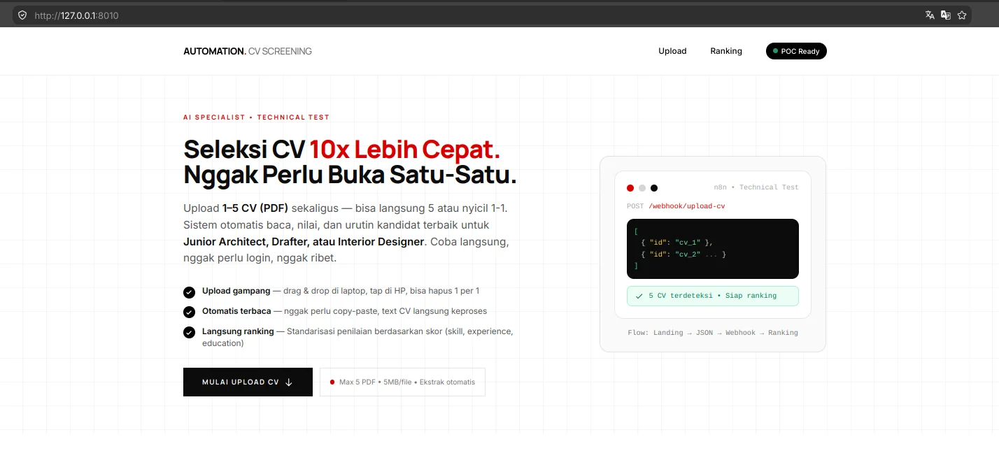

Experiment 007
StableFrom 30 Minutes to 5 Seconds: Automating Mass CV Screening Without In-System AI.
Can 1–5 CV PDFs be screened from a 30-minute manual review to a 5-second ranked shortlist — without heavy AI or hallucination — using only pdf.js, 24-node n8n orchestration, and a predictable rule-based scoring on a private server? Deadline: 3 days. Delivered in 5 hours.
System Requirements
Processor
Intel Core i5-11400F
RAM
DDR4 16GB
GPU
AMD RX 6700 XT 12GB VRAM
Inference Engine
llama.cpp
Model (Assistant Only)
Ornith 1.0 35B A3B IQ4_NL
Harness / IDE
OPENCODE + MCP
Orchestration
n8n
Database
PostgreSQL
Frontend
HTML5 + Tailwind CDN
Logic
Vanilla JS + pdf.js 2.16
Server
Python 3 (Private)
Status
STABLE — 5 Hours
Screenshots






Visualization
Predictable Scoring — 70% Threshold, No LLM Feeling
20 skill = 40% + 6 education = 30% + 6 experience = 30%. 5 CV samples: 80,75,50,35,25 — only 2 Lolos ≥70%. The rest are predictable, auditable, and adjustable.
Ranking — 5 CV Samples
2 Lolos at ≥70%CV3 (Drafter & 3D, 10y) 80 → Lolos, CV1 (Arch, 7y) 75 → Lolos, CV4/2/5 (50,35,25) → Tidak Lolos. CSV says Lolos 80% utk Drafter & 3D Visualization — HR knows why.
Workflow Orchestration, Not Hallucination
Bot without in-system AI — local LLM only as syntax assistant.
Local LLM (Ornith 35B) = assistant only, supervised by builder — not the brain
Deadline was 3 days (Fri 4 Sept 2026) — delivered in 5 hours. That speed came from keeping AI outside the system and keeping the workflow predictable.
For those unable to interpret the data from a technical standpoint, here is the conclusion:
This is not a demo — it’s a hiring tool that cuts 30 minutes of manual CV opening to about 5 seconds. You upload 1–5 PDFs on your phone or laptop (drag & drop or tap), and it ranks them for you.
It’s fair per position: a Junior Architect is scored on AutoCAD/Revit, a Drafter on Enscape/D5, an Interior Designer on Photoshop — so no one is judged on the wrong skills. You get a table (Rank, CV, Position, Score, Status) and a CSV you open in Excel — with a clear reason like “Lolos 75% utk Junior Architect”.
It doesn’t use heavy AI inside. The score is a simple, auditable rule HR can change (20 skills 40% + 6 edu 30% + 6 exp 30%, pass at 70%). That makes it predictable and fast, with no hallucination.
It runs 100% on your own private computer — the PDFs never leave your browser, and the database cleans itself after each batch. No SaaS fee, no token cost.
It was due in 3 days — it was delivered in 5 hours. For a small team hiring a few roles at a time, it’s sufficient, stable, and you own it 100%.
Experiment Details
A manufacturing company is hiring fast for 3 roles (Junior Architect, Drafter & 3D Visualization, Interior Designer). HR screens CVs manually — opening 5 PDFs one-by-one takes ~30 minutes, is subjective, and doesn’t scale. The AI Specialist test asks for a POC in 3 days that is end-to-end, lightweight, HR-friendly, mobile-friendly, and runs locally on a private server (not public, no login, no SaaS).
- 1.
Single-page landing `index.html` 626 lines — `HTML5 + Tailwind CDN + Vanilla JS + pdf.js 2.16.105`, `Inter + Manrope`, `bg-grid`, `data-reveal`, `mobile sticky bottom` bar, `toast` (success/error/info, auto 3.2s), `progress Mengekstrak 3/5...` with bar, validation `PDF only, max 5MB/file, max 5 files, dup check`, badge `cv_1..cv_5`, no login.
- 2.
Client-side extraction:
pdfjsLib.getDocument({data: arrayBuffer}).promise → getPage → getTextContent → join, returns{text, page_count}, wraps as JSON Array[{id: "cv_1", filename, size_kb, page_count, text, uploaded_at}]— array directly, for n8n `Split In Batches`, with `AbortController 15s` and `fallback Download JSON` if webhook offline. - 3.
n8n workflow `Technical Test` 24 nodes — `Webhook POST /upload-cv (responseNode)` → `Code Extractor` (pecah 5 CV) → `Code Keyword Router` (Posisi A/B/C) → `Edit Fields Rapihin` (10 fields) → `Switch Posisi` (3 outputs + fallback) → 3 branches each `Pemecah (1 per 1) → Normalisasi → Edit Fields → Hitung 40/30/30 → ekstrak` → `Merge Gabungan (Append 3)` → `Code Ranking (sort desc)` → `database (Postgres upsert)` → `Respond Ranking (allIncomingItems)` → `Postgres Clean (TRUNCATE)`.
- 4.
Keyword routing: Posisi A `Junior Architect` (12 keywords: autocad, revit, sketchup, lumion, building code...), Posisi B `Drafter & 3D Visualization` (15: enscape, d5 render, shop drawing, as-built...), Posisi C `Interior Designer` (10: furniture, lighting, photoshop, illustrator...).
- 5.
Predictable scoring (per report, 70% threshold):
20 skill = 40% + 6 edu = 30% + 6 exp = 30%,total = round(skillScore+eduScore+expScore),≥70% Lolos, <70% Tidak— implemented as 1 CV per 1, no batch OOM, 3 jalur duplicated for fairness per position. - 6.
Output: ranking `rank 1..5` with
{id_cv, nama_file, posisi, total_score, status, alasan}— e.g., `Lolos 80% utk Drafter & 3D Visualization` — table in landing page + `Download Ranking (JSON)` + `Download CSV` with Indonesian headersPeringkat, ID CV, Nama File, Posisi Dilamar, Skor (0-100), Status, Alasan+ BOM0xEFBBBFfor Excel. - 7.
Local private server:
Python 3 http.serveronhttp://localhost:8010(8000 taken) + webhookhttp://localhost:5678/webhook/upload-cv— no public URL, no data leaves, PDFs only in browser memory. - 8.
Mobile & robust: breakpoints `sm 640 md 768 lg 1024`, upload zone `full width`, file cards `full width`, ranking table `overflow-x-auto scrollbar-thin`,
try/catch per file, `firstLine` name fallback, `slice(0,5)` guard, `TRUNCATE` after delivery → fresh for next batch.
For mass hiring with a 3-day deadline, workflow orchestration (pdf.js + n8n + Postgres) with a predictable, auditable rule is more maintainable, predictable, and resource-efficient than embedding an LLM (even local) inside the scoring. Hallucination risk outweighs benefit; local LLM is better as a supervised syntax assistant (Ornith 35B via OpenCode/MCP) rather than the system’s brain.
I built the landing page per component (upload zone, list with `cv_1..cv_5`, pdf.js extract, JSON POST, ranking table) with deterministic prompts via OpenCode + MCP, each validated in small windows. I built the n8n workflow 1 node per checkpoint (18 checkpoints, 24 nodes), tested per node, and confirmed with the owner before next. The whole POC was delivered in 5 hours — well under the 3-day deadline — on consumer hardware, 100% locally.
- 1.
Small quantized LLM → unstable: aggressive quant made scoring unpredictable, hard to debug, hallucinated skills — abandoned for rule-based 40/30/30.
- 2.
Big LLM → heavy: more stable but needs strong hardware (my 12GB VRAM cannot sustain 5 CV parallel efficiently) — abandoned for workflow lightness.
- 3.
One-shot n8n generation → wrong: missed `body` vs `body.data` wrapping, Switch missed keyword, Merge misaligned — fixed by 1-node-per-checkpoint with explicit `Map` and `responseNode`.
- 4.
pdf.js on scanned PDFs → empty: no text layer → `text.length <10` — handled with toast + `_error` flag per file, still pushing item instead of failing batch, plus 15s `AbortController` and fallback `Download JSON`.
Pivoted from “AI inside” to “workflow without AI inside, AI only as assistant”. Extracted PDFs in the browser (not server) to keep n8n light and allow fallback. Duplicated 3 branches (A/B/C) for fairness per position instead of one generic flow. Made scoring auditable (HR can tweak 20/6/6 or threshold 70). Delivered in 5 hours because context was kept small and each node was tested before the next.
Figures from the live POC on private server. You can verify via screenshots above and the workflow ID v1lQYQUZndoeoR6w.
Landing Lines
626
index.html
n8n Nodes
24
Technical Test
Branches
3
A/B/C + fallback
CV Tested
5
+ Vacancy PDF
Threshold
70%
Lolos / Tidak
Time
~5s
vs 30min manual
Deadline
5 Hours
of 3 days
Ranking
2 Lolos
80,75 / 50,35,25
POC is stable and delivered well within the 3-day deadline — actually completed in just 5 hours — live on private server http://localhost:8010. HR uploads on mobile or desktop, gets a ranked shortlist in ~5 seconds (2 Lolos of 5), downloads CSV for Excel, and Postgres is truncated automatically — no token cost, no data leaves, no manual cleanup, HR only does 3 clicks: Upload → Send → Download.
Predictability beats probability for HR: a simple auditable formula HR can tweak is more valuable than a black-box LLM. Workflow orchestration is the skill — supervision over syntax, bug potential, and ease of maintenance matters more than model size. Keeping AI as assistant (Ornith 35B) rather than the system’s brain made the POC shippable in 5 hours on consumer hardware, 100% locally.
For business owners/HR: you don’t need a SaaS ATS — a local workflow you own 100% cuts 30 min to 5 sec, with a clear Lolos 70% utk Junior Architect reason per candidate, fair per position, private. For recruiters: this proves the builder can ship landing page + n8n + Postgres end-to-end in 5 hours, 3-day deadline, with no hallucination and no data exfiltration — predictable engineering.
Configuration Template
pdf.js — browser-side extract (keeps n8n light)
async function extractTextFromPDF(file){
const pdf = await pdfjsLib.getDocument({
data: await file.arrayBuffer()
}).promise;
let fullText = "";
for(let i=1; i<=pdf.numPages; i++){
const page = await pdf.getPage(i);
fullText += (await page.getTextContent())
.items.map(it=>it.str||"").join(" ") + "\n";
}
return { text: fullText.trim(), page_count: pdf.numPages };
}
// → wrap as [{id: "cv_1", filename, size_kb, page_count, text, uploaded_at}]
n8n scoring — predictable 40/30/30, 70% threshold (report)
// 20 skill = 40% + 6 edu = 30% + 6 exp = 30% → 70% Lolos (per report)
const skillScore = (Math.min(keahlian.length,20)/20)*40;
const eduScore = (Math.min(edukasi.length,6)/6)*30;
const expScore = (Math.min(expTahun,6)/6)*30;
const total = Math.round(skillScore+eduScore+expScore);
const status = total>=70 ? "Lolos" : "Tidak Lolos";
const alasan = status==="Lolos"
? `Lolos ${total}% utk ${posisi}`
: `Tidak Lolos ${total}% utk ${posisi}`;
Do not copy this snippet blindly. The key is pdf.js in browser + rule 40/30/30: local LLM was only a syntax assistant (Ornith 35B), supervised — not the brain. That kept the POC predictable and shippable in 5 hours.
- 1.
I extracted PDFs in the browser so n8n only receives clean JSON — no binary handling, demo works even if n8n is offline (fallback
Download JSON). - 2.
I kept scoring rule-based (20/6/6, 70%) so HR can audit and tweak it — not an LLM guess that hallucinates skills.
- 3.
I duplicated 3 branches A/B/C for fairness — Architect scored on Revit, Drafter on Enscape, Interior on Photoshop — same 40/30/30 but different skill sets.
- 4.
I kept it private & fresh:
Python 3onlocalhost:8010,TRUNCATEafter delivery — no data leaves, no manual DB cleanup.
FAQ
Frequently Asked Questions
Why not put AI inside the scoring system? ▼
Small quantized models hallucinate and are unpredictable; big models are heavy and need strong hardware (RX 6700 XT 12GB cannot sustain 5 CV parallel). Workflow orchestration (pdf.js + n8n + rule 40/30/30, 70% threshold) is stable, fast (~5s), auditable, and 100% local — AI was only a supervised syntax assistant (Ornith 35B).
How does HR know why a CV passed or failed? ▼
Each row has a clear reason: e.g., Lolos 80% utk Drafter & 3D Visualization or Tidak Lolos 35% utk Junior Architect. The CSV header is Indonesian — Peringkat, Skor (0-100), Status, Alasan — so HR opens it in Excel and knows immediately. Threshold 70% is adjustable.
What if the CV is a scanned PDF or the webhook is offline? ▼
Scanned PDFs with no text layer trigger a toast (text <10 chars) but don’t fail the batch — the item is sent with empty text and an _error flag. If the webhook is offline (15s timeout), the landing page shows a fallback Download JSON so the demo still works.
Disclaimer
A Note on Results
This is a 3-day Proof of Concept — actually delivered in 5 hours — not a full Applicant Tracking System. The 70% threshold and 40/30/30 weights are subjective and based on the 5 CV samples — intentionally adjustable to the recruitment team’s criteria. The result (2 Lolos of 5) is a reference for HR to decide who to interview, not a final hiring decision. For its scope (5 CVs at a time, local, no token cost), it is sufficient and stable, but a scanned PDF with no text layer will still need manual review.